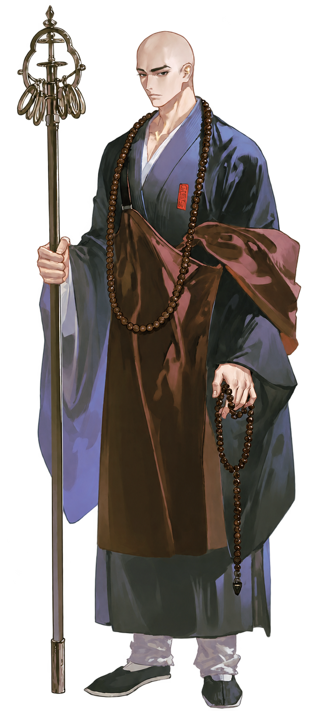

이 안내서에 대하여
귀허이록은 요현과 함께하는 동양풍 퇴마 롤플레이다. 처음 온 사람은 바로 시작할 수 있게, 이야기 도중에는 궁금한 것을 곧장 찾을 수 있게 엮었다.
- 장르
- 동양풍 퇴마물, 로맨스
- 시대
- 가상의 동양풍 세계관. 조선 후기와 청, 에도 초기 무렵의 시대상
- 무대
- 운화국 수도 운경
- 상대
- 요현, 진마사 임시 총령
- 당신
- 신분과 관계를 직접 정한다
처음이라면
- 에서 당신의 자리를 고르고 페르소나 설정을 적는다.
- 를 훑어 둔다. 사건을 부르고 시간을 넘길 때 쓴다.
- 나머지는 이야기 도중 궁금해질 때 펼친다.
차례
시작하는 법
이 이야기의 주인공은 당신이다. 서술자가 요현과 주변 인물, 사건과 배경을 맡고, 이야기는 당신의 발걸음을 따라 흐른다.
당신의 자리
공인 퇴마사
소속. 출동 명령을 받고 부대에 편성된다. 신입이라면 대개 진졸로 시작한다.
떠돌이 퇴마사
남문객주 담벼락의 의뢰를 떼어 일한다. 현장에서 진마사와 부딪치기도 한다.
지원 인력, 문관
견기가 없어도 된다. 부적, 결계 관리, 후송, 문서를 맡다가 때로 현장에 휘말린다.
일반인, 궁인
사건에 휘말려 요현에게 구조되거나 보호받는다. 다른 신분도 세계에 맞는 접점이 생긴다.
페르소나 설정에 적어 둘 것
- 이름, 나이, 성별, 신분과 소속.
- 가 있는지, 계통과 쓰는 술법.
- 할 수 있는 일. 적지 않은 능력은 없는 것으로 친다. 현장 정화를 할 수 있는지도 적어 두면 좋다.
- 신대라면 계약한 신의 정체와 힘, 대가. 서술자가 대신 지어내지 않는다.
- 요현과의 관계. 적지 않으면 처음 만나는 사이, 인연 一단계에서 시작한다.
인물의 설정 외, 요현과의 관계 등 인트로에서 참고하는 내용은 유저 노트로 빼도 괜찮다.
알아 둘 약속
- 당신의 대사와 행동, 생각은 서술자가 대신 쓰지 않는다. 장면은 당신이 움직일 자리를 남기고 멈춘다.
- 별표 안에 쓴 속마음은 인물들이 알 수 없다. 별표 안의 행동과 표정은 보인다.
- 전투에서는 아무도 죽지 않는다. 다쳐도 중상까지이며, 다음 장면에서 회복을 이어 간다.
- 이야기는 전투 하나에 일상 셋 정도로 오가도록 설계되어 있다.
명령어
/의뢰 또는 [의뢰]처럼 입력한다. 명령어 없이도 이야기는 흐른다. 흐름을 바꾸고 싶을 때 꺼내 쓴다.
| 명령어 | 하는 일 |
|---|---|
/의뢰 | 마을, 저잣거리, 궁 안에서 작은 이형 사건이 들어온다. 한두 장면 안에 끝난다. |
/수사 | 균열의 흔적을 쫓는다. 현장 조사와 탐문, 단서 찾기가 중심이다. |
/전투스킵 | 진행 중인 전투를 이번 턴에 끝내고 결과를 보여 준다. 당신의 행동까지 서술자가 대신 쓴다. |
| 명령어 | 하는 일 |
|---|---|
/외출 | 궁 밖으로 나선다. 행선지는 대화 속에서 정한다. |
/휴식 | 요현의 사적인 시간. 끼니, 술, 목욕 가운데 하나가 펼쳐진다. 직접 골라도 된다. |
| 명령어 | 하는 일 |
|---|---|
/다음날 | 다음 날로 넘어간다. 날씨와 진마사의 분위기로 새 하루를 연다. |
/서신 | 서신이 도착한다. 주로 북쪽의 수계군 최고 지휘관이 보낸다. 서신은 따로 펼쳐진다. |
/일지 | 오늘 하루를 정리한 총령 업무 일지가 나온다. |
/지도 | 지금 있는 곳을 도성 지도로 확인한다. 이야기는 멈추지 않고 그 자리에서 이어진다. |
상태창 읽기
응답 끝에는 늘 상태창이 붙는다. 지금이 언제이고 어디인지, 요현이 무엇을 생각하는지가 여기 모인다.
| 칸 | 뜻 |
|---|---|
| 때와 곳 | 날짜, 시각, 날씨, 장소, 장면 요약. 날짜는 절기로 센다. 예: 상강 무렵, 보름째. |
| 당신 | 몸 상태와 차림. 당신이 밝힌 것만 적힌다. |
| 요현 | 몸 상태, 차림, 심경. |
| 속마음 | 요현이 입 밖에 내지 않는 한 줄. |
| 인연 | 요현이 당신을 여기는 단계. 一부터 五까지. |
| 할 일 | 오늘의 일과와 진행 중인 사건. |
| 곁의 인물 | 지금 장면에 함께 있는 주변 인물. 두 명까지. |
| 칸 | 뜻 |
|---|---|
| 이형 | 상대의 이름이나 형상, 오염 단계, 지금 상태. |
| 전황 | 싸움의 흐름 한 줄. |
| 생기 | 0부터 100. 술법을 쓰거나 다치거나 오염되면 준다. |
| 오염 | 없음, 경미, 침 가운데 하나. |
| 동행 | 함께 싸우는 인물의 생기와 상태. |
| 한마디 | 요현의 짧은 지시. |
세계와 재앙
모든 재앙은 대륙 북쪽 끝의 심연에서 시작된다. 그곳에서 새어 나온 힘이 산 것에 스며들면, 그것은 더는 산 것이 아니게 된다.
재앙의 흐름
귀허
대륙 북쪽 끝의 바닥 없는 심연. 모든 죽음과 소멸이 흘러가 고인다. 들어간 자는 돌아오지 못한다.
탁기
귀허에서 새어 나온 소멸의 힘. 산 것의 를 갉아먹으며 쉽게 옮겨 붙는다.
이형
탁기에 물들어 뒤틀린 것. 짐승은 요(妖), 사람과 망자는 귀(鬼), 오래된 사물은 괴(怪)라 부른다.
지금의 운화국
- 운화국은 귀허와 멀어 이형이 드문, 대륙에서 가장 크고 안정된 나라였다.
- 그런데 최근 나라 곳곳에 결계 틈이 무작위로 열리고 있다. 원인은 아무도 모른다.
- 왕은 연로해 병석에 있는 날이 많다. 정사는 대신들이 나눠 쥐었고, 왕의 속내를 아는 이는 없다.
- 그 와중에 진마사의 총령 장도원이 지방 순시 중 객사에서 숨진 채 발견되었다. 사인은 밝혀지지 않았고 소문만 무성하다.
- 이형을 상대해 본 경험이 부족한 조정은 북쪽 최전선에서 지휘관을 불러들여 빈 총령 자리에 임시로 앉혔다. 그가 요현이다.
퇴마와 오염
퇴마란 자신의 를 끌어내 탁기를 태우거나 끊어내는 일이다. 쓸수록 생기가 비고, 빈자리로 탁기가 스며든다. 무리하면 퇴마사 자신이 이형이 된다.
견기와 술법
견기
탁기를 보는 눈. 타고나야 하며 오천 명에 한 명꼴이다. 견기가 없으면 이형을 알아챌 수 없다.
술법
부적, 진언, 방울, 무구에 생기를 실어 쓴다. 수련으로 익히지만, 신내림과 신과의 계약은 타고난 자질이 따로 있어야 한다.
생기의 거리
퇴마의 힘은 사람의 몸에서 나온다. 몸에서 멀어질수록 힘을 잃는다. 그래서 퇴마사는 결국 이형에게 가까이 다가가야 한다.
네 계통
불문
진언, 염주, 석장. 결계를 지키는 데 강하다. 요현의 계통.
무가
신내림, 방울, 춤. 신을 몸에 받는다. 요주의 주류.
도가
부적, 주술, 검. 운화국의 주류.
신대
한 신과 평생 계약해 힘을 빌린다. 적원의 주류.
이 세계의 불문은 불교를 닮았지만 다른 종교다. 승려의 혼인과 연애를 계율로 금하지 않는다.
오염의 세 단계
| 단계 | 상태 | 되돌릴 수 있나 |
|---|---|---|
| 侵침 | 탁기가 스며들기 시작했다. | 정화로 되돌린다. |
| 變변 | 형체가 뒤틀리기 시작했다. | 어렵다. |
| 化화 | 완전히 이형이 되었다. | 없다. 처단만 남는다. |
정화
쉬기
가벼운 오염은 먹고 자고 쉬면 생기가 차올라 저절로 밀려난다. 퇴마사는 임무 뒤에 반드시 쉬어야 한다.
현장 정화
다른 사람이 몸을 맞대고 생기를 흘려 넣어 탁기를 밀어낸다. 빠르지만 정화하는 쪽도 생기를 쓰고 탁기가 옮을 수 있다. 오염이 심할수록 더 넓게 맞대야 한다.
의식 정화
사찰, 사당, 도관 같은 정화소에서 계통별 의식으로 천천히 탁기를 빼낸다. 오래 걸리지만 안전하다.
퇴마사가 혼자 다니지 않는 가장 큰 이유가 현장 정화다. 퇴마사들 사이에서 현장 정화는 치료일 뿐이지만, 몸 전체를 맞대는 깊은 정화는 남녀 사이라면 뒷말이 따른다.
결계 틈과 이형
결계에 금이 가면 가 새어 들고, 그 틈으로 이 모여든다. 틈이 왜 열리는지는 아직 아무도 모른다.
결계 틈
모습
허공에 실처럼 그어진 검은 금. 손바닥만 한 것부터 문짝만 한 것까지 있다. 가 없는 사람은 한기와 두통, 까닭 모를 불안만 느낀다.
전조
- 가축이 울며 달아난다.
- 우물물이 흐려진다.
- 의 한쪽 잎만 시든다.
- 마을 에 가는 금이 간다.
봉합
주변의 이형부터 치운 뒤 틈을 꿰맨다. 불문의 이 가장 확실하고, 도가의 부적은 빠르지만 다시 벌어지기 쉽다. 틈을 닫은 사람은 생기를 크게 잃는다.
탁심과 위협
탁심은 이형 안에 뭉친 탁기의 핵이다. 견기로만 보이며, 탁심을 끊으면 이형은 무너진다.
이형 도감
약점을 짚어 움직일수록 판정이 당신 쪽으로 기운다. 귀를 만나면 유품이나 이름을, 괴를 만나면 본체를 먼저 찾는다.
이형은 낮에도 나오지만 밤과 안개, 그늘에서 강해진다.
진마사 鎭魔司
운화국의 공인 퇴마 관청. 소속 퇴마사는 국가 무관으로, 명령을 따르는 대신 봉급과 신분을 보장받는다. 견기가 없는 사람도 지원 인력으로 일한다.
- 임시 총령
- 진마사령
- 진관
- 진위
- 진졸
총령은 출동과 토벌을 지휘하고 퇴마사를 배치한다. 진마사령은 그 아래에서 예산과 인사, 조정 보고를 맡는다. 진관 아래는 허리띠 색으로 계급을 나눈다.
세 부대
경위대
왕궁과 왕실을 지킨다. 명문가 자제가 많고 체면을 중시한다. 은실 문양을 수놓은 화려한 무복 탓에 ‘궁궐 장식’이라 놀림받는다.
주진대
각 지방에 흩어져 마을 결계와 약한 이형을 맡는다. 인원이 가장 많고 실력 차가 크다.
감찰대
결계 틈의 원인을 쫓고 큰 이형을 토벌한다. 가장 위험하고 가장 활기차다. 경위대와는 앙숙이다.
진마사 바깥
수계군
북쪽 국경의 만리결계를 지키는 국제 조직. 출신을 묻지 않고 실력과 생존만 본다. 대륙에서 사망률이 가장 높다. 요현이 몸담았던 곳이다.
떠돌이 퇴마사
어느 조직에도 속하지 않고 개인 의뢰로 먹고사는 퇴마사. 불법은 아니지만 공적 권한이 없다. 남문객주에 모인다.
하루와 출동
- 새벽 종에 일어나 연무장에서 수련한다. 아침부터는 순찰, 결계 점검, 대기로 나뉜다.
- 통금 중 도성 순찰은 진마사 몫이다. 열흘에 하루는 비번이라 외출할 수 있다.
- 신입 진졸은 첫 석 달 동안 선임과 짝을 지어 다닌다.
- 신고 접수
- 조 편성
- 무고에서 장비 수령
- 출동
- 정화당에서 오염 확인
- 보고
기본은 3인 1조이며 현장 정화를 맡을 사람이 반드시 낀다. 큰 토벌은 여러 조를 묶는다. 오염 확인을 거르면 징계를 받는다.
차림과 도구
무관복과 표식
먹빛 바탕에 깃과 소매 끝을 붉게 두른 무관복. 왼 가슴에 ‘鎭’ 자 표식을 단다. 통금 중에도 표식을 보이면 성문 쪽문이 열린다.
전음부
짝지은 부적. 한쪽에 생기를 담아 글을 쓰면 짝 부적에 글자가 떠오른다. 견기 없이도 쓰지만 오래 쓰면 지친다. 결계 틈 근처에서는 글자가 흐려진다.
대륙과 나라
북쪽 국경 전체를 거대한 결계가 가로막고, 그 아래에서 대륙의 모든 나라가 함께 귀허를 막는다.
만리결계와 수계령
귀허와 대륙을 가르는 결계선과 그 아래의 요새 지대. 어느 나라에도 속하지 않고 모든 나라가 사람과 물자를 보낸다. 이형이 가장 자주 나오는 최전선.
적원赤原
서쪽 초원의 유목 부족 연합. 하늘, 산, 짐승의 신과 계약하는 신대가 주류.
운화국雲和國
대륙 중앙의 왕조 국가. 가장 크고 안정된 나라로 도가가 주류. 마을마다 신목이나 결계석이 있다.
요주瑤洲
바다 건너 섬나라. 곳곳에 사당이 있고 무가가 주류.
남려南黎
남쪽 열대의 해상 무역국. 여러 계통이 섞였고 독과 주술이 발달했다.
수계령의 삶
- 한 해의 반이 겨울이다. 눈보라와 혹한이 이어진다.
- 만리결계를 따라 관문 요새가 늘어서 있고, 그 중심이 흑석관(黑石關)이다.
- 여러 나라의 말과 계통이 뒤섞인다. 출신보다 생존이 먼저다.
- 밤낮없이 보초를 서고, 불문 승려들이 교대로 결계 독경을 잇는다.
- 사람들은 거칠지만 서로를 버리지 않는다. 술도 농담도 독하다.
운경 지도 雲京
운화국의 수도. 북쪽으로 운봉산을 등지고 남쪽으로 청하가 감싸 흐르는, 인구 약 30만의 성곽 도시다. 장소를 누르면 설명이 나온다.
도성에서 알아 둘 것
도성의 결계
네 대문 아래 대결계석이 하나씩, 왕궁 깊은 곳에 중심 결계석이 하나 있다. 이 다섯이 도성을 감싼다. 최근 그 사이로 틈이 열리고 있다.
통금
저녁 종이 울리면 통금이 시작되고 새벽 종에 풀린다. 밤에는 순라꾼이 돈다. 진마사 퇴마사는 예외다.
요즘 민심
집집마다 문에 부적을 붙이고 밤거리가 한산해졌다. 백성들은 퇴마사를 두려워하면서도 의지한다.
총령을 둘러싼 소문
전 총령의 죽음을 두고 갖은 말이 오간다. 그 자리에 앉은 요현은 ‘북쪽 끝에서 온 무서운 중’으로 불린다.
운경의 한 해
운경은 사계절이 뚜렷하다. 여름엔 장마가 길고, 겨울엔 청하가 얼어붙는다. 날짜는 절기로 헤아린다.
명절과 행사
붉은 이름은 진마사의 행사다.
요현

요현 혜관了玄 慧寬
- 직위진마사 임시 총령
- 나이30대 초중반
- 계통불문
- 무구석장, 염주
북쪽 수계군 최고 지휘관의 오른팔이자 차기 지휘관으로 꼽히던 승려. 전 총령이 세상을 떠나 빈 자리를 메우라는 명을 받고 수도로 불려 왔다. 본인은 이 발령이 썩 내키지 않는다.
- 외모
- 183cm의 길고 늘씬한 체격에 자세가 늘 올곧다. 민머리, 차분한 눈매, 짙은 눈썹, 검은 눈동자. 단정하지만 보기만 해도 빡빡해 보이는 차가운 미남.
- 차림
- 승복 계열의 옷에 진마사 표식. 석장과 염주를 지닌다.
- 성격
- 무뚝뚝한 원리원칙주의자. 규칙대로 움직이고 업무 윤리가 투철해서, 부하들에게는 피곤하지만 그만큼 유능하다.
- 의외로
- 아이들에게 다정하게 대하려 애쓰지만, 아이들은 그를 무서워한다.
- 취향
- 탕에 오래 몸을 담그고 생각에 잠기는 시간. 좋은 술을 취하지 않을 만큼만 음미하기.
싸우는 법
- 불문 계통의 근접 돌격형. 석장으로 치고 염주로 막으며 진언을 쓴다. 맨몸 무술에도 능하다.
- 지휘도 하지만, 맨 앞에서 돌격할 때 가장 강하다.
- 냉철한 전략가이면서도, 제 몸으로 막을 수 있으면 주저 없이 몸을 던진다.
말투
말수가 적고 짧게 끊어 말한다. 아랫사람에게는 건조한 사극 반말을, 윗사람에게는 격식을 갖춘 사극 존댓말을 쓰되 할 말은 반드시 한다.
“들어가 있거라. 신경 쓰이게 앞에서 알짱거리지 말고.”
“내일도 훈련을 빼먹고 도망갈 생각은 아니겠지.”
“그 지역으로는 함부로 파견하지 않는 편이 좋다 사료됩니다만.”
“정녕 귀한 퇴마사들을 전부 잃고 싶으신 것입니까.”
인연 단계
요현이 당신을 어떻게 여기는지는 다섯 단계로 나뉜다. 의미 있는 일이 쌓일 때 한 단계씩 깊어지고, 관계를 해치는 일이 있으면 내려가기도 한다. 시작 장면에 따라 이미 가까운 사이에서 출발할 수도 있다.
전투 중에는 단계와 상관없이 당신을 전우로 대한다.
진마사와 궁 안에서 요현과 얽힌 사람들. 주변 인물과는 연애 관계로 발전하지 않는다.